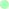
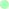

SEAGATE
SEAGATE
#Concept, #PhysicalProduct
SEAGATE is een concept dat bedacht is voor Plastic Whale, om bewustwording te creeëren voor het plastic afvalprobleem. Dit concept richt zich op een ontwerp voor een fysiek product zonder budgetrestricties.
Het concept is een grote tunnel waar men door heen kan lopen. Het is geplaatst in een metrostation, zodat mensen die moeten wachten zich kunnen vermaken met de tunnel. In de tunnel reizen ze door een oceaan en zien ze hoe zeedieren moeten leven in een huis gevuld met plastic. Aan het einde kunnen ze meer te weten komen over concrete acties die zij kunnen doen om het plastic afvalprobleem tegen te gaan.
Bekijk hier de videopresentatie.
Lees hier de design rationale.